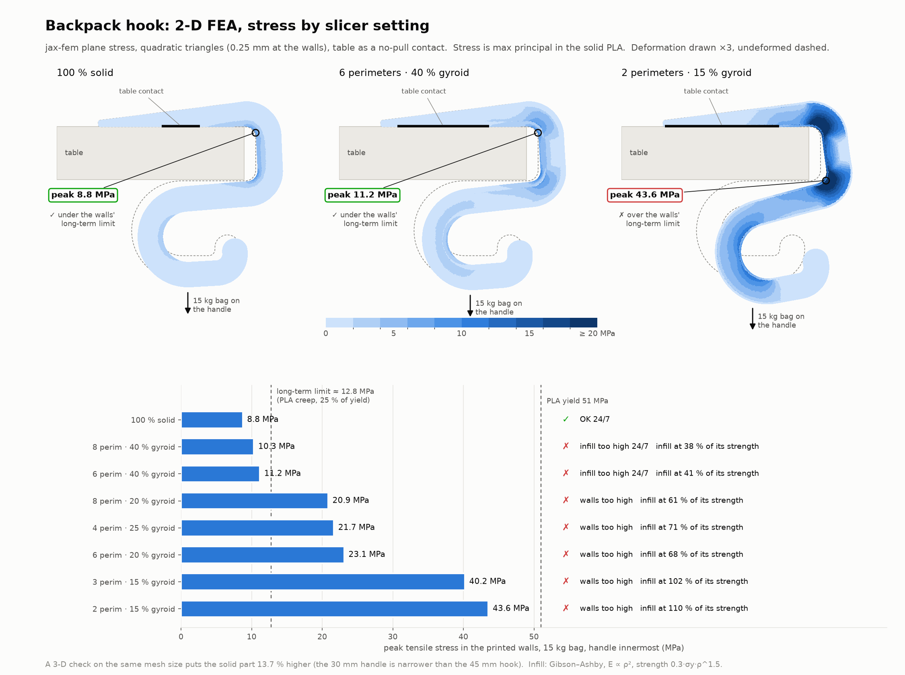
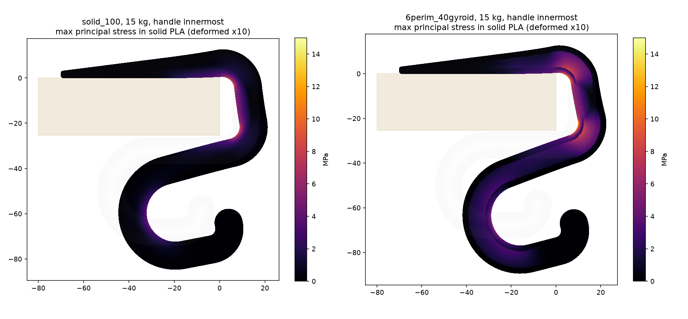
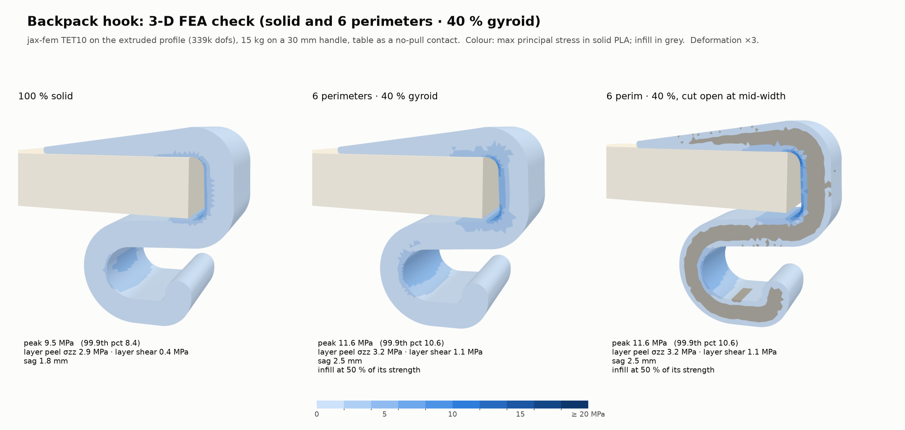

Backpack table hook: FEA report
Verdict: print it 100 % solid for a heavy bag that stays on the hook. The solid part passes every load case up to a 19 kg bag left on it 24/7.
6 perimeters with 40 % gyroid is fine only for light bags: up to 7 kg left on 24/7, or 14 kg for a few hours. Settings with less infill fail at 15 kg.
1. Setup
- Load: 15 kg (147 N) on a 6 mm handle patch, at the back of the hook loop, which gives the largest lever on the bends.
- Support: the desk is a no-pull contact (it can push but not pull), solved as an active set. The desk reaction lines up with the load: both sit at x = −27.01 mm, and penetration stays under 2×10⁻⁸ mm.
- Material: E = 2.3 GPa, ν = 0.35, yield 51 MPa (Prusament TDS). Interlayer strength is assumed at 25.5 MPa (50 % of yield).
- Slicer model: perimeter walls, solid skins and gyroid core each get their own modulus. The infill uses Gibson–Ashby: E ∝ ρ², strength 0.3·σy·ρ1.5.
- 2-D: plane stress with TRI6 elements, 0.25 mm at the walls. 3-D: the profile swept into TET10 (72,864 tets, 112,953 nodes, ~339k dofs) with a 30 mm handle.
- Scaling: the model is linear with a fixed contact set, so stress scales exactly with bag weight.
2. Solver verification
Before the real run, both element types were checked against a cantilever with a known beam-theory answer (verify_elements.json).
| Element | Nodes | Tip deflection error | Mid-span stress error | Reaction error |
|---|---|---|---|---|
| TRI6 plane stress | 5,841 | −0.29 % | +0.18 % | ≈ 0 |
| TET10 | 9,037 | −1.13 % | +0.08 % | ≈ 0 |
Mesh convergence: halving the wall element size moved the peak by 0.1 % or less (solid and 40 % gyroid).
3. 2-D results by slicer setting


4. 3-D check

| At 15 kg | 100 % solid | 6 perim · 40 % gyroid |
|---|---|---|
| Peak wall stress, 2-D | 8.76 MPa | 11.19 MPa |
| 3-D knockdown (narrow handle) | ×1.137 | ×1.107 |
| Design peak wall stress | 9.96 MPa | 12.38 MPa |
| Infill, share of its own strength | – | 55 % |
| Layer peel / layer shear | 2.9 / 0.4 MPa | 3.2 / 1.1 MPa |
| Peak by region: top bend / bottom bend | 9.5 / 9.5 MPa | 12.2 / 11.6 MPa |
| Peak by region: loop / top bar | 4.3 / 4.7 MPa | 5.2 / 6.3 MPa |
| Sag | 1.8 mm | 2.5 mm |
5. Safety factors
Each case is checked against yield. The lowest factor across walls, infill and layer bonds governs.
| Case | What it means | Load | Required factor |
|---|---|---|---|
| Short-term | Bag hung for minutes to hours | static | ≥ 2 |
| Drop-on | Bag let go onto the hook from rest | 2 × static | ≥ 1.5 |
| 24/7 | Bag left on for months (PLA creeps) | static | ≥ 4 |
100 % solid (walls govern)
| Bag | Short-term | Drop-on | 24/7 |
|---|---|---|---|
| 5 kg | 15.4 | 7.7 | 15.4 |
| 10 kg | 7.7 | 3.8 | 7.7 |
| 15 kg | 5.1 | 2.6 | 5.1 |
| 20 kg | 3.8 | 1.9 | 3.8 |
| Heaviest bag that passes | 38.4 kg | 25.6 kg | 19.2 kg |
6 perimeters · 40 % gyroid (infill governs)
| Bag | Short-term | Drop-on | 24/7 |
|---|---|---|---|
| 5 kg | 5.5 | 2.7 | 5.5 |
| 10 kg | 2.7 | 1.4 | 2.7 |
| 15 kg | 1.8 | 0.9 | 1.8 |
| 20 kg | 1.4 | 0.7 | 1.4 |
| Heaviest bag that passes | 13.7 kg | 9.1 kg | 6.9 kg |
The walls alone would pass 15 kg 24/7 (factor 4.1). The infill is the weak link. The layer bonds never limit: their factor is 8 or more at 15 kg.
6. Assumptions and limits
- Infill strength is not measured. The Gibson–Ashby value is conservative, so the gyroid limits are probably pessimistic. A pull test on a printed coupon would settle it.
- The 24/7 limit of 25 % of yield is a design guide, not Prusament creep data.
- The drop-on factor of 2 assumes the bag is released from rest. Throwing it onto the hook is worse.
- The model is linear elastic and small strain, at 23 °C. PLA softens around 55 °C; use PETG for a hot room or a car.
- The 1 mm side-edge rounding is left out of the 3-D mesh. No load reaches those edges.